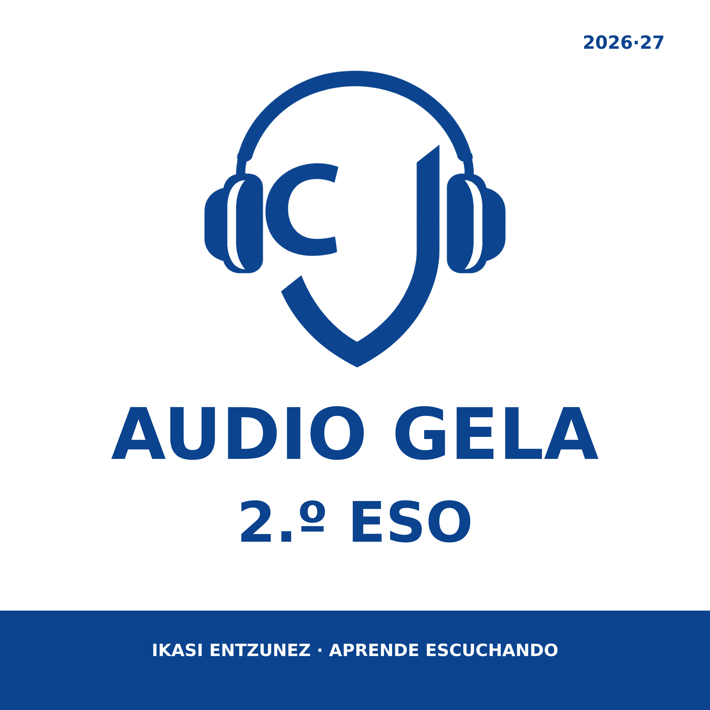

AUDIO
GELA
Escucha, repasa y practica los contenidos de 2.º ESO. Todo está organizado por asignatura, idioma, unidad y tema.
Asignaturas
Selecciona una asignatura y despliega el tema que quieras estudiar.
Historia · GIZA1 unidad · 2 idiomas12 audios disponibles
CASTCastellano6 episodios disponibles
Unidad 1 · La Edad Media6 temas
T01Cómo comenzó la Edad MediaDel Mare Nostrum a la caída del Imperio romano de Occidente.8:12
Del Mare Nostrum a la caída del Imperio romano de Occidente.
T02El Imperio bizantinoLa continuidad romana en Oriente y su evolución cultural y religiosa.8:06
La continuidad romana en Oriente y su evolución cultural y religiosa.
T03Los reinos germánicosLa transformación política, social y económica de Europa occidental.8:10
La transformación política, social y económica de Europa occidental.
T04El reino visigodoLa creación del reino de Toledo y su caída en el año 711.7:31
La creación del reino de Toledo y su caída en el año 711.
T05El Imperio carolingioCarlomagno, la organización imperial y el Tratado de Verdún.8:04
Carlomagno, la organización imperial y el Tratado de Verdún.
T06Nacimiento y expansión del islamArabia, Mahoma, la Hégira, la expansión y los cinco pilares.8:02
Arabia, Mahoma, la Hégira, la expansión y los cinco pilares.
EUSEuskara6 audio erabilgarri
1. unitatea · Erdi Aroa6 gai erabilgarri
T01Nola hasi zen Erdi AroaMare Nostrumetik Mendebaldeko Erromatar Inperioaren erorketara.8:46
Mare Nostrumetik Mendebaldeko Erromatar Inperioaren erorketara.
T02Bizantziar InperioaErromaren jarraitutasuna Ekialdean eta haren bilakaera politiko, ekonomiko, kultural eta erlijiosoa.8:58
Erromaren jarraitutasuna Ekialdean eta haren bilakaera politiko, ekonomiko, kultural eta erlijiosoa.
T03Erresuma germaniarrakMendebaldeko Europako eraldaketa politikoa, ekonomikoa, soziala eta kulturala.9:12
Mendebaldeko Europako eraldaketa politikoa, ekonomikoa, soziala eta kulturala.
T04Bisigodoen erresumaTolosatik Toledora: lurralde-, erlijio- eta lege-batasuna, eta 711ko amaiera.9:07
Tolosatik Toledora: lurralde-, erlijio- eta lege-batasuna, eta 711ko amaiera.
T05Karolingiar InperioaFrankoetatik Verdungo Itunera: Karlomagno, antolaketa inperiala eta zatiketa.9:32
Frankoetatik Verdungo Itunera: Karlomagno, antolaketa inperiala eta zatiketa.
T06Islamaren sorrera eta hedapenaArabia, Mahoma, Hegira, musulmanen hedapena eta islamaren bost zutabeak.8:43
Arabia, Mahoma, Hegira, musulmanen hedapena eta islamaren bost zutabeak.
Física y Química · FIKIUnidad 1 · Materia y medida · 2 idiomas8 audios disponibles
CASTCastellano4 bloques · teoría, ejercicios y ficha
Unidad 1 · Materia y medida100 preguntas de teoría · ejercicios con razonamiento
T01La materia y sus cambiosCiencia, materia, cuerpos y sistemas. Cambios físicos y químicos.2:55
Ciencia, materia, cuerpos y sistemas. Cambios físicos y químicos.
T02Las propiedades de la materiaCualitativas y cuantitativas; intensivas y extensivas; generales y características.2:59
Cualitativas y cuantitativas; intensivas y extensivas; generales y características.
T03Medir y convertir unidadesMagnitudes, Sistema Internacional, prefijos, superficies, volúmenes y litros.3:43
Magnitudes, Sistema Internacional, prefijos, superficies, volúmenes y litros.
T04Densidad y flotaciónCalcular densidad, masa y volumen. Comparar materiales y explicar la flotación.3:06
Calcular densidad, masa y volumen. Comparar materiales y explicar la flotación.
EUSEuskara4 bloke · teoria, ariketak eta fitxa
1. unitatea · Materia eta neurketa100 teoria galdera · arrazoibidea duten ariketak
T01Materia eta haren aldaketakZientzia, materia, gorputzak eta sistemak. Aldaketa fisikoak eta kimikoak.3:17
Zientzia, materia, gorputzak eta sistemak. Aldaketa fisikoak eta kimikoak.
T02Materiaren propietateakKualitatiboak eta kuantitatiboak; intentsiboak eta estentsiboak; orokorrak eta bereizgarriak.3:35
Kualitatiboak eta kuantitatiboak; intentsiboak eta estentsiboak; orokorrak eta bereizgarriak.
T03Neurtzea eta unitateak bihurtzeaMagnitudeak, Nazioarteko Sistema, aurrizkiak, azalerak, bolumenak eta litroak.4:03
Magnitudeak, Nazioarteko Sistema, aurrizkiak, azalerak, bolumenak eta litroak.
T04Dentsitatea eta flotazioaDentsitatea, masa eta bolumena kalkulatzea. Materialak alderatzea eta flotazioa azaltzea.3:41
Dentsitatea, masa eta bolumena kalkulatzea. Materialak alderatzea eta flotazioa azaltzea.
Añadir AUDIO GELA a la aplicación Podcasts
- Abre Podcasts y entra en Biblioteca.
- Pulsa ··· y elige Seguir un programa por URL.
- Copia y pega la URL de la asignatura que quieras añadir.
Historia · GIZA · Castellano y euskera
Física y Química · FIKI · Castellano y euskera